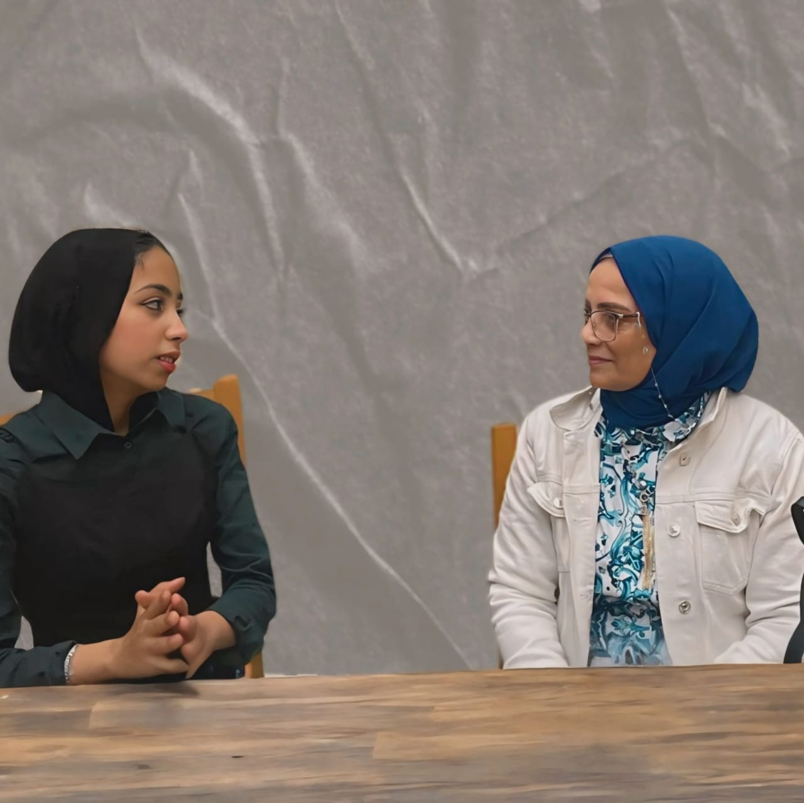

ذوى الهمم قد التحدي
- نجلاء محمود احمد محمد عيد العسيلى أو الملقبة ببعثة السلام لزوى الهمم حيث عملت رئيس وحدة نظم المعلومات بالادارة العامة للبحوث العلمية – جامعة القاهرة وعضو المجلس القومى للمرأة فرع محافظة الجيزة والعديد من الألقاب والمناصب العليا؛ من مواليد اسيوط؛ وتحديداُ قرية بنى عديات؛ أصبت بشلل الأطفال وانا لم اتجاوز بعد التسعة شهور الاولى من عمري؛ برغم انى طعمت بطعم شلل الأطفال مثلى كمثل غيري؛ الا انه اختارنى انا؛ والحمد لله على كل حال؛ وكانت طفولتى محتلفة عن بقية الأطفال في سني؛ فقد وهبني الله والد اهتم بي اهتماماً شديداً وكرس جزءاً من وقته الثمين للعناية بي ومراعاتى؛ وفتح لي باباً كبيرا من الثقافه والعلم؛ فتح لى مكتبته العامره بكل كتب الدين والتاريخ واللغة العربيه؛ حيث كان يعمل موجهاً للغة العربية في اسيوط ؛ وحاصل على العالمية من الأزهر الشريف؛ فعندما اغلقت امامى طرق اللعب واللهو مع اخوتى والأطفال التى في مثل سني؛ فتح لى هو طريق اخر للقراءة والمتعه الحقيقيه؛ فأزدادت معارفى وزادت معها اسئلة كثيرة وكبيره؛ كان يقابلها بأبتسامه كبيرة.
- للأسف الشديد لاتوجد فرص وفيره للإشخاص ذوى الإعاقة, وحينما يتم الأعلان عن فرص تكون قليلة جدا ونادرة وبعضها وهمى ظروفها لاتناسب ذوى الإعاقة وذلك لأبراء ذمة الشركات واوصى فى هذا الأمر ان تتعرض الشركات لتفتيش دورى من مكاتب العمل لتطبيق نسبة ال5% جبرياً, وهذا ايضاً يضعنا فى معضلة كبيرة حينما يتواطأ صاحب العمل مع المعاق لأعطائة مبلغ رمزى شهرياً ويجلس فى منزلة ويصله المبلغ كل شهر, وبذلك تكون الشركات قد دلست على الحكومة وعلى المعاق وعلى ايضاً القانون الذى يلزم الشركات بتطبيق هذه النسبة, اولا بأيمان اصحاب الأعمال بأن المعاق هو شخص حقيقي وليس خيال,او شخص عاجز عبأ على المكان, وان تتبنى الوزارة ومكاتب العمل تدريب المعاقين تدريب جدى على التكنولوجيا الحديثة والأبتكار وتبنى مواهبهم حقيقي وليس استعراض فى وسائل الأعلام ونؤكد إن الحق في العمل حق أساسي من حقوق الإنسان. ويقره الإعلان العالمي لحقوق الإنسان بأن "كل فرد يملك الحق في العمل، وفي حرية اختيار عمله، وفي شروط عمل عادلة ومواتية، وفي الحماية من البطالة" . والحق في العمل أساسي لإعمال حقوق أخرى من حقوق الإنسان، وهو جزء لا يتجزأ من كرامة الإنسان ومتأصل فيها. وعادة ما يوفر العمل سبل عيش الشخص وأسرته، كما يسهم، في حال اختيار العمل أو قبوله بحرية، في نمو الشخص والاعتراف به داخل المجتمع
- - مادة 81 التى تنص على: تلتزم الدولة بضمان حقوق الأشخاص ذوي الإعاقة والأقزام صحيا، اجتماعيا، ثقافيا، ترفيهيا، رياضيا وتعليميا، وضمان توفير فرص العمل لهم، كما تلتزم بضمان تخصيص نسبه منها لهم، وتهيئة المرافق العامة والبيئة المحيطة بهم، وممارستهم لجميع الحقوق السياسية، ودمجهم مع غيرهم من المواطنين إعمالاً لمبادئ العدالة والمساواة وتكافؤ الفرص مادة 93 تلتزم الدولة بالاتفاقيات والعهود والمواثيق الدولية لحقوق الإنسان التي تصدِق عليها مصر وتصبح لها قوة القانون بعد نشرها وفقا للأوضاع المقررة مادة 214 يحدد القانون المجالس القومية المستقلة ومنها المجلس القومي لحقوق الإنسان، المجلس القومي للمرأة، المجلس القومي للطفولة والامومة، والمجلس القومي للأشخاص ذوي الإعاقة، ويبين القانون كيفية تشكيل كل منها واختصاصاتها وضمان استقلالية وحيادية أعضائها، وأحقيتها في إبلاغ السلطات العامة عن أى انتهاك يتعلق بمجال عملها، تتمتع المجالس القومية بالشخصية الاعتبارية والاستقلال الفني والمالي والإدارى ويؤخذ رأيها في مشروعات القوانين واللوائح المتعلقة بها وبمجال عملها . مادة 244 تعمل الدولة على تمثيل الشباب، المسيحيين والأشخاص ذوي الإعاقة تمثيلا ملائما، في أول مجلس للنواب ينتخب بعد إقرار هذا الدستور وذلك على النحو الذي يحدده القانون قانون رقم 39 لسنة 1975 بشأن تأهيل المعاقين يخصص للمعاقين الحاصلين على شهادات التأهيل، نسبة 5% من مجموع وظائف المستوى الثالث الخالية بالجهاز الإداري للدولة، والهيئات العامة، والوحدات الاقتصادية وهذه المادة الأخيرة غير قابلة للتطبيق مع قرار مجلس الوزراء بمنع التعيين لجميع الأفراد نظراً للظروف الأقتصادية التى تمر بها الدولة فى هذة الأوقات, مما أصبحت الكره فى يد القطاع الخاص التى يتهرب منها على الدوام الا فيما ندر .
- - أنشئ المجلس القومي للأشخاص أصحاب الهمم، بموجب قرار رئيس الجمهورية رقم 11 لسنة 2019، ليحل محل المجلس القومي لشؤون الإعاقة الصادر بقرار رئيس الوزراء رقم 410 لسنة 2012، وألت إليه جميع حقوقه ويتحمل بجميع إلتزاماته. ويستمر أعضاء المجلس القومي لشؤون الإعاقة بتشكيله الحالي في أداء عملهم، لتسيير شئونه وفق أحكام القانون المرافق إلى حين تشكيل المجلس القومي للأشخاص أصحاب الهمم ونحن ننتظر الجهد والثمرة وبرامج التدريب التى تعود على المعاق واسرتة بوطيفة او فرصة عمل بالقطاع الخاص الذى يسد كل الأبواب تحت حجج واهية!, فمازالت الى الأن لم تحل مشكلة معاش المرأة المعاقة التى ترثة عن طريق الأب او الأم واكتفى التطبيق على الرجل المعاق فقط.!!!
- تهدف المجتمعات إلى توفير فرص متساوية وشاملة لذوي الإعاقة، بحيث يكون لديهم الحق في التعليم والعمل والمشاركة في الحياة الاجتماعية والثقافية. يعتبر تشجيع الاندماج والتفاعل الاجتماعي لذوي الاحتياجات الخاصة جزءًا هامًا من تحقيق هذه الأهداف
- وذوي الإعاقة يعيشون حياة عادية مثل أي شخص آخر، ولكنهم يواجهون تحديات أكثر في بعض الجوانب اليومية من الحياة. قد يحتاجون إلى دعم إضافي في المجالات مثل التعليم والعمل والرعاية الصحية والتنقل والاتصال.
- لا شك أن الكثير من الأشخاص من ذوي الإعاقة يُعانون من المشكلات النفسية التي تؤثر على صحتهم النفسية والجسدية بشكل مُباشر، تلك المشكلات النفسية تتنوع ما بين القلق أو الاكتئاب أو نوبات الهلع.
- إنّ هذه الفئة من المعاقين تحتاج إلى نوعٍ خاصٍ من الرعاية الطبية والنفسية لتخطي تلك المشاكل بسلام.
- وهناك بعض الأساليب والطرق التي يُمكن اتباعها لمساعدة الأشخاص من ذوي الإعاقة وعائلاتهم على تحقيق التوازن النفسي والحفاظ على صحتهم النفسية، من هذه الطرق:
- الاستشارات الطبية: تُساعد العلاجات الدوائية والعلاج النفسي من خلال الكلام مع المرض على تخطي الكثير من الاضطرابات النفسية التي تؤثر عليهم سلباً. تواصل أفراد الأسرة مع الطفل: إن احتواء الشخص ذو الإعاقة من قبل أسرته له عظيم الأثر على صحته النفسية، حيث يُتيح له ذلك النوع من التواصل أن يُعبّر عن مخاوفه وقلقه بشأن مرضه بحرّية. اتِباع نمط حياة صحي: إن الحفاظ على نظام غِذائي مُتوازن من أهم الأمور التي تُساعد مريض ذوي الإعاقة وتُساهم في دعم صحته النفسية، كما تُسهم التمارين الرياضية في الحفاظ على الاستقرار النفسي للمريض. التواصل الاجتماعي مع الآخرين: ينبغي لأُسر الأشخاص من ذوي الإعاقة مُساعدتهم على التواصل مع الآخرين للتخفيف من حدّة عُزلتهم ووحدتهم ومساعدتهم على تخطي مشاكلهم النفسية، كما أن الاندماج مع دائرة اجتماعية من المُقربين والأصدقاء من أهم العوامل التي تُساعد في دعم الصحة النفسية للشخص ذوي الإعاقة.
- يُعاني الأشخاص ذوي الإعاقة من العديد من التحديات النفسية التي تواجههم وتؤثر على نمط حياتهم بشكل رئيسي. تلك التحديات والعوائق النفسية تتمثل فيما يلي: الاكتئاب: قد يشعر الأشخاص ذوو الإعاقة بالعزلة الاجتماعية، مما يؤدي إلى الشعور بالوحدة والانغلاق على النفس. القلق: قد يعاني الأشخاص ذوو الإعاقة من القلق الذي يواجههم بسبب عدم التيقّن بشأن مستقبلهم والخوف من عدم القدرة على ممارسة حياة طبيعية. احترام الذات: قد يشعر الأشخاص ذوو الإعاقة بالنقص وقد يجدون صعوبة في تقبّل إعاقتهم. الضعف الإدراكي: يمكن أن يعاني الأشخاص ذوو الإعاقة من صعوبات ضعف الذاكرة والتركيز وحل المشكلات. الإحباط: قد يعاني الأشخاص من ذوي الإعاقة من الإحباط بسبب قيود إعاقتهم ونقص الدعم من العائلة والأصدقاء. . الشك الذاتي بالقدرات: قد يواجه الأشخاص ذوو الإعاقة صعوبة في الإيمان بقدراتهم وقد يصبحون منتقدين لأنفسهم بشكل مفرط.
- يوجد الكثير من أدوات الدعم النفسي التي يُمكن من خلالها مُساعدة ذوي الإعاقة على تخطي مُشكلاتهم النفسية. تلك الأدوات تتضمن الآتي: الاستشارة الفردية أو العلاج النفسي: يركزّ هذا النوع من الاستشارة على مساعدة الفرد في إدارة عواطفه ومعالجة أفكاره وتحسين مهارات الاتصال لديه. العلاج الجماعي: يوفر هذا النوع من العلاج مكاناً آمنا للأشخاص ذوي الإعاقة لمناقشة تجاربهم ومشاعرهم مع أشخاص آخرين عاشوا مواقف مماثلة. مجموعات الدعم: هي تجمعات منظمة للأشخاص ذوي الإعاقات المتماثلة، والذين يجتمعون لتبادل الخبرات وتقديم الدعم لبعضهم البعض. التدريب على الحياة اليومية: يساعد هذا النوع من الخدمة الأفراد ذوي الإعاقة على تحديد الأهداف ووضع خطط عمل للوصول إلى تلك الأهداف. العلاج السلوكي المعرفي: يساعد هذا النوع من العلاج الأفراد في تحديد وتغيير أنماط السلوك غير المفيدة. الأدوية والتدخلات الطبية: يمكن وصفها لعلاج مشاكل الصحة العقلية أو المساعدة في إدارة أعراض الإعاقة. الإرشاد المهني والتربوي: قد يساعد هذا النوع من الاستشارة الأفراد ذوي الإعاقة في الوصول إلى فرص التعليم أو العمل بشكل أكبر. الرعاية المؤقتة: يوفر هذا النوع من الرعاية راحة مؤقتة لأسر الأشخاص ذوي الإعاقة. برامج دعم الأقران: تساعد هذه البرامج الأفراد ذوي الإعاقة في التواصل مع الموجهين والأشخاص الآخرين ممن لديهم معَّوِقات مُماثلة.
- يُعدُ دعم أسر الأشخاص ذوي الإعاقة أمراً مهماً لأنه يمكن أن يساعد في تقليل عبء الرعاية عليهم، وتوفير الدعم العاطفي لهم، ويُسهم في وصولهم للموارد والخدمات بشكل أسهل وأكثر فعالية.
- غالباً ما يتعين على العائلات تحمل مسؤولية توفير الرعاية والدعم لأحبائها من ذوي الإعاقة، مما يُشكل عبئاً معنوياً ومادياً عليهم في بعض الأحيان.
- كما يُمكن أن يُسهم توفير الدعم النفسي للأسر في تخفيف التوتر وتوفير الموارد اللازمة لمساعدة الأسرة على التعامل مع متطلبات رعاية شخص من ذوي الإعاقة إذ إنه من خلال زيادة الوصول إلى الموارد والخدمات يُمكن تحسين حياة الأشخاص ذوي الهمم ومساعدتهم في عيش حياة أكثر استقلالية.
التعليقات
من الفنانين المحترمين جدا
اكتب تعليق